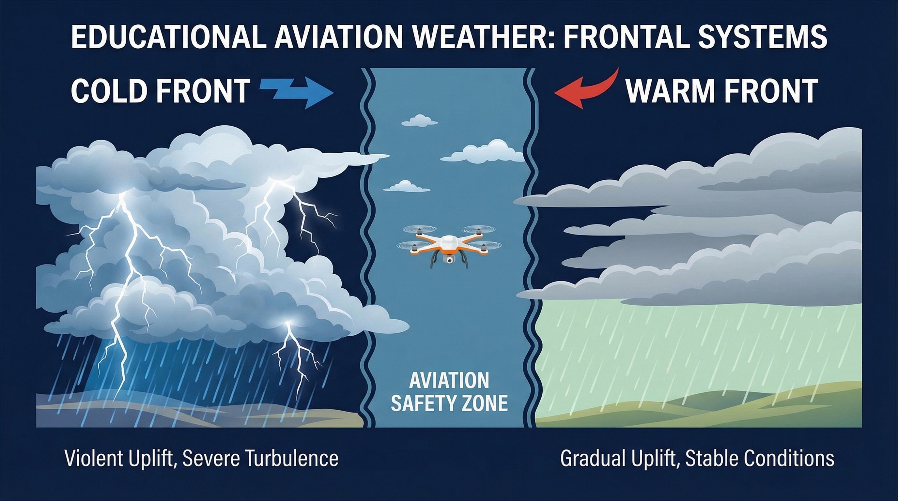
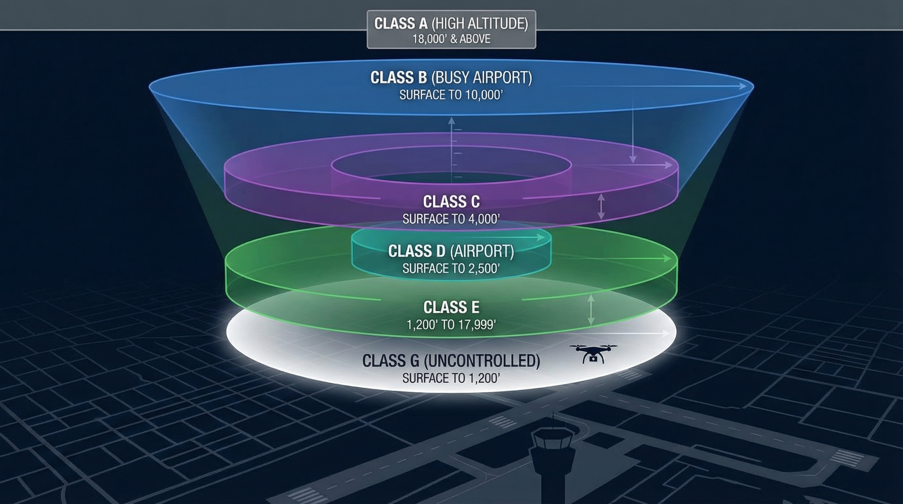
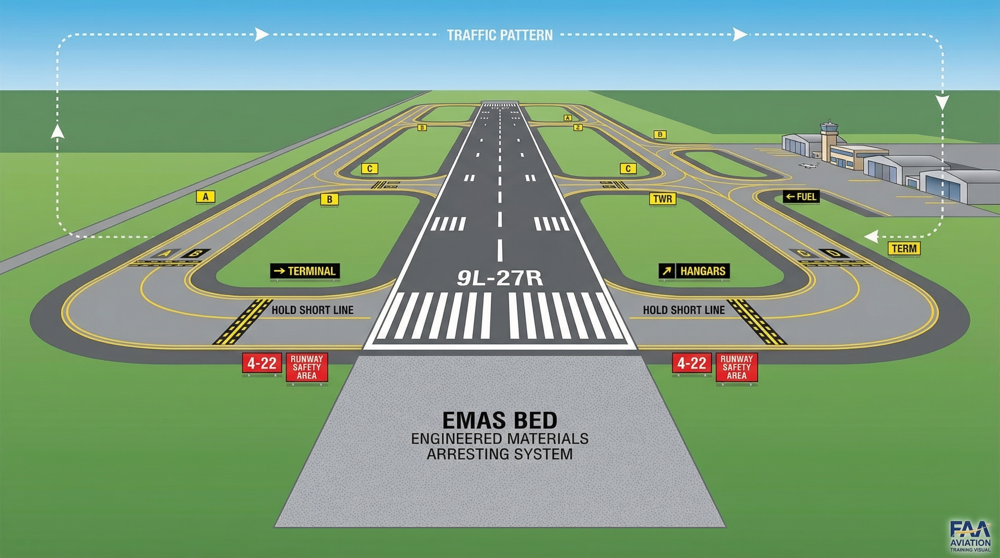
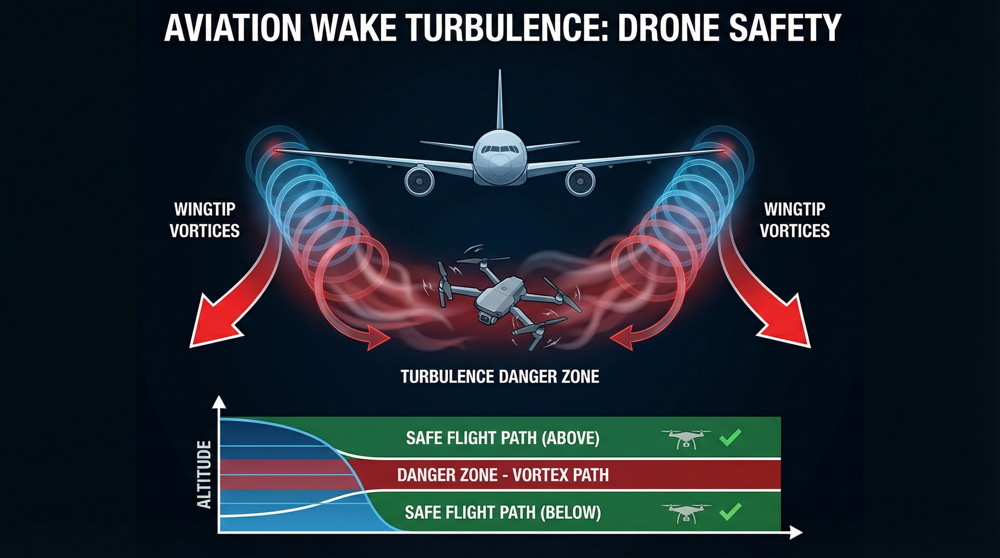

The Big Picture
14 CFR Part 107 governs ALL commercial and recreational drone operations in the US that aren't under special exemptions. It covers registration, pilot certification, operating rules, and operations over human beings.
Is directly responsible and final authority for the operation
Must ensure UAS poses no undue hazard to people, aircraft, or property
Must have ability to direct small UAS to ensure compliance
Cannot serve as RPIC, person manipulating controls, or visual observer for more than one UAS at a time (§107.35)
Zero Tolerance Rule
Part 107 is MORE strict than the "8 hours bottle to throttle" rule. Cannot operate while under the influence of ANY alcohol or drug affecting faculties.
Must comply with §§91.17 and 91.19 (same standard as manned aircraft)
Refusing an alcohol test = grounds for certificate denial/suspension/revocation for up to 1 year
Entirely self-policing — honor system with serious legal teeth
If migraine, vertigo, or blurred vision from even bad sleep → ground yourself
Night ops require completing initial knowledge test or training after April 6, 2021
Aircraft must have anti-collision lighting visible for 3 sm with sufficient flash rate
Civil twilight = 30 min before sunrise to 30 min after sunset (except Alaska)
RPIC may reduce light intensity if determined safe based on operating conditions
Anti-collision lighting also required during civil twilight (not just full night)
RPIC and/or visual observer must see the aircraft throughout entire flight
Can NOT Be Waived
§107.36 (hazardous material) and §107.23 (careless/reckless operation) cannot be waived.
✈ Practice Questions — Regulations
Question 1 of 30
A small UAS pilot checks groundspeed and sees 102 mph in a 15-knot tailwind. What must the pilot do?
§107.51(a): groundspeed may not exceed 87 knots (100 mph). Groundspeed — speed over the ground — is what matters, not airspeed. The pilot must slow down.
Question 2 of 30
What is the minimum cloud clearance required under Part 107?
§107.51(d): minimum 500 feet below clouds and 2,000 feet horizontally from clouds. These are Part 107-specific requirements for Class G airspace — not the same as manned VFR minimums.
Question 3 of 30
A small UAS damages a neighbor's fence during a flight. Repair estimate is $750. Must the RPIC report to the FAA?
§107.9: Report required within 10 calendar days if property damage cost exceeds $500. The exception only applies if cost is $500 or less. At $750, reporting is required.
Question 4 of 30
A pilot's remote pilot certificate knowledge was last verified 25 months ago. Can they fly today?
§107.65: A person may not exercise remote pilot privileges unless they've accomplished the recency requirement (test or training) within the previous 24 calendar months. 25 months = expired.
Question 5 of 30
Under Category 2 operations, what is the impact energy threshold that must NOT be exceeded?
§107.120(a)(1): Category 2 aircraft must not cause injury equivalent to transfer of more than 11 foot-pounds of kinetic energy. Category 3 limit is 25 ft-lbs. Category 4 requires an actual FAA airworthiness certificate.
02
Weather Theory
PHAK Chapter 12 — understand the sky before you fly

Standard Sea Level Pressure
29.92 inHg
or 1,013.2 mb
Pressure Drop Rate
1 in
per 1,000 ft altitude gain
Standard Lapse Rate
3°C
per 1,000 ft (5.4°F)
Cold Front Speed
25–30 mph
warm fronts: 10–15 mph
Cloud Base Formula — Memorize It
(Surface Temp °F − Dew Point °F) ÷ 4.4 × 1,000 = Cloud Base AGL in feet Example: Temp 68°F, Dew Point 50°F → (68−50) ÷ 4.4 × 1000 = 4,090 ft AGL
Troposphere (0–~20,000 ft): where all weather happens; temperature DECREASES with altitude
Stratosphere (~20,000–160,000 ft): temperature INCREASES; ozone layer; stable
Mesosphere (~160,000–280,000 ft): temperature decreases again
Thermosphere (~280,000+ ft): temperature increases dramatically
Atmosphere composition: Nitrogen ~78%, Oxygen ~21%, Other ~1% (Argon, CO₂, etc.), plus variable water vapor (0–4%)
High pressure = fair weather, descending dry air
Low pressure = bad weather, rising moist air, clouds and precipitation
Rapidly falling pressure = bad weather / severe storms approaching
Density altitude: as pressure decreases, density altitude increases → less air = worse performance (longer takeoff, less climb)
Hypoxia (impaired judgment from low oxygen): can occur at 5,000 ft for some; typically ~10,000 ft for most
Wind flows from high pressure to low pressure
Deflected by Coriolis effect to the right in Northern Hemisphere
High pressure = clockwise circulation (anticyclone); Low = counterclockwise (cyclone)
Wind direction convention: direction the wind is coming FROM (e.g., a "northwest wind" blows from NW toward SE)
Wind shear: sudden, drastic change in speed/direction; can occur at any altitude; most hazardous near surface; associated with fronts, thunderstorms, temperature inversions, strong upper winds (>25 kts)
Microburst: most severe wind shear; intense downdraft; headwind losses of 30–90 knots; indicated by intense rain shaft at surface with virga at cloud base
Towering cu, cumulonimbus, heavy rain, gusty winds, tornadoes, hail
Stationary
0–5 mph
Along boundary
Combined warm+cold front weather; prolonged poor conditions
Occluded
Varies
Warm front wx then cold front wx
Complex weather; warm front occlusion = warm front aloft
Squall Line
Narrow band of active thunderstorms that develops ON OR AHEAD of a cold front in moist, unstable air. Extremely hazardous — intense and fast-moving.
Radiation fog: forms on clear, calm nights; ground cools, air cools to dew point; disperses during day into low stratus; requires NO wind
Advection fog: REQUIRES wind; moist air moves over cooler surface; can persist during day; common on coasts/water
Upslope fog: moist air forced up terrain; most hazardous for aviation; cools as it rises until saturated
Ice fog: very cold conditions; water vapor freezes directly to ice crystals; severe visibility reduction
Cumulus stage: updrafts develop, cumulus clouds form, no precipitation yet
NEVER fly near a thunderstorm.
Give wide berth. Even under "clear" sides. The cumulonimbus is the most dangerous cloud type — can extend from surface to stratosphere.
Report
Type
Content
METAR
Actual (observation)
Current conditions at an airport: wind, visibility, weather, clouds, temp/dew point, altimeter
TAF
Forecast (24–30 hr)
Terminal area forecast: wind, visibility, weather, clouds expected
PIREP
Real-time (pilot report)
Actual conditions aloft: turbulence, icing, cloud tops, winds
SIGMET
Warning — severe
Severe turbulence, severe icing, hail, tornadoes, microbursts, volcanic ash
Thunderstorm cloud. Most dangerous. Avoid at all costs.
✈ Practice Questions — Weather
Question 6 of 30
Surface temperature is 77°F, dew point is 59°F. What is the approximate cloud base AGL?
(77 − 59) ÷ 4.4 × 1,000 = 18 ÷ 4.4 × 1,000 = 4,090 ft AGL. Always subtract dew point from temp, divide by 4.4°F per 1,000 ft lapse rate.
Question 7 of 30
Which type of fog requires wind to form and persist?
Advection fog forms when moist air moves (advects) over a cooler surface — it requires wind for both formation AND continued existence. Radiation fog forms on calm, clear nights — wind actually disperses it.
Question 8 of 30
A pilot notices cirrus clouds thickening and lowering, pressure falling steadily. What is most likely approaching?
Warm fronts approach with classic sequence: cirrus → cirrostratus → altostratus → nimbostratus, with falling pressure. Weather occurs AHEAD of the warm front (unlike cold fronts where weather is at/behind the boundary).
Question 9 of 30
Which cloud type is the most dangerous to aircraft and should always be avoided?
Cumulonimbus (thunderstorm cloud) is the most hazardous cloud to pilots. It produces severe turbulence, icing, hail, lightning, microbursts, and tornadoes. It can extend from surface to the stratosphere — avoid it entirely.
Question 10 of 30
What does a SIGMET alert pilots about?
SIGMET = Significant Meteorological Information. It warns of severe hazards like severe turbulence, severe icing, hail, tornadoes, microbursts. AIRMET covers moderate hazards. METAR is actual observed conditions.
03
Airspace & Airport Ops
PHAK Chapter 14 — know where you can and can't fly

§107.41 Key Rule
Cannot operate in Class B, C, or D airspace, or within the lateral boundaries of a Class E surface area, WITHOUT prior ATC authorization. Use LAANC or DroneZone to get clearance.
Airspace Classes — Drone Quick Reference
Class
Typical Location
Altitude
Part 107 Requirement
A
Above 18,000 ft MSL
18,000–60,000 ft
Not applicable for drones (above max altitude)
B
Major airports (LAX, ORD, JFK)
Surface to ~10,000 ft (inverted wedding cake)
Prior ATC authorization REQUIRED
C
Medium-hub airports
Surface to 4,000 ft AGL (5 nm / 10 nm rings)
Prior ATC authorization REQUIRED
D
Airports with control tower
Surface to ~2,500 ft AGL (~5 nm radius)
Prior ATC authorization REQUIRED
E (surface)
Airports without tower (often)
Surface upward
Prior ATC authorization REQUIRED
E (700/1200 ft)
Transitions, instrument approach areas
700 or 1,200 ft AGL to 18,000 ft
No authorization required below 400 ft AGL typically
G
Uncontrolled — most rural/remote
Surface to 700 or 1,200 ft AGL
No authorization required — but all Part 107 limits still apply
Airspace Authorization Memory Aid
B · C · D · E(surface) = ASK
All controlled airspace touching the surface requires prior ATC authorization. Class G = free (but rules still apply)
Commercial Service: publicly owned, 2,500+ passenger boardings/yr, scheduled service
Cargo Service: serves air cargo with >100 million lb annual landed weight
Reliever: designated by FAA to relieve congestion at commercial airports; public or private
General Aviation: all remaining airports; largest category in US
Towered: has operating control tower; two-way radio REQUIRED
Non-towered: no control tower; radio not required but strongly recommended; use CTAF
CTAF (Common Traffic Advisory Frequency): at non-towered airports; pilots self-announce position/intentions; no ATC control
UNICOM: non-government radio frequency providing airport info; commonly 122.8, 122.7, 122.9 MHz
ATIS (Automated Terminal Information Service): recorded info at towered airports; includes weather, active runway, altimeter, NOTAMs; updated regularly; code letter changes each update (Alpha, Bravo, Charlie…)
Pilots expected to have ATIS info before calling tower — reduces radio congestion
Standard turns: ALL left (why? pilot in left seat has better view of runway)
Pattern altitude: standard 1,000 ft AGL (1,500 ft AGL for large aircraft)
Entry: 45° to downwind leg; descend to pattern altitude
Pattern legs in order:
Crosswind: 90° turn from runway direction after takeoff
Downwind: parallel to runway, opposite landing direction
Base: perpendicular to runway, begins descent
Final: aligned with runway, landing direction
Windsock: points DOWNWIND (in direction wind blows toward); fully inflated = strong wind; partially = moderate; drooping = calm/light
Tetrahedron: points INTO the wind (upwind); shows recommended runway direction
Both are visual aids for uncontrolled airports to determine active runway
Opposite end number differs by 18 (e.g., 09 and 27 = same runway)
Centerline: solid yellow stripe down middle of taxiway; dashed white on runway
Threshold markings: white rectangles at approach end of runway
Displaced threshold: available for taxi/takeoff but not landing
Runway distance remaining: black background, white numbers = thousands of feet remaining
✈ Practice Questions — Airspace & Airport Ops
Question 11 of 30
A drone pilot wants to fly at 200 ft AGL near an airport with an operating control tower and Class D airspace. What must the pilot do FIRST?
§107.41: Prior ATC authorization required for Class B, C, D, and Class E surface areas — regardless of altitude. Flying 1 ft in Class D without clearance violates Part 107. Use LAANC (automatic) or FAA DroneZone for authorization.
Question 12 of 30
What class of airspace is uncontrolled and generally requires NO prior authorization for drone operations?
Class G is uncontrolled airspace — no ATC control, no authorization needed. However, ALL Part 107 operating rules still apply (altitude limits, visibility, cloud clearance, etc.). Most rural areas are Class G near the surface.
Question 13 of 30
The standard traffic pattern altitude at most airports for VFR operations is:
Standard traffic pattern altitude is 1,000 ft AGL. Some airports use 1,500 ft AGL for large aircraft or military turbojets. Check NOTAMs and airport information for specific airports.
Question 14 of 30
At a non-towered airport, pilots use which frequency to announce their position and intentions?
CTAF is the frequency for self-announcing at non-towered airports. Pilots broadcast their position and intentions so other traffic knows where they are. It may be a UNICOM, FSS, or other designated frequency.
Question 15 of 30
Runway 36 has what approximate magnetic heading?
Runway numbers = magnetic heading ÷ 10. So Runway 36 = 360° (due north). The opposite end would be Runway 18 (180°, due south). Runway 09 = 090° (east), Runway 27 = 270° (west).
04
Runway Signs, Wake Turbulence & Drone Rules
The physical language of the airfield — and how drones fit in
🎙
Deep Dive Audio Overview
Runway Signs, Wake Turbulence & Drone Rules · Top Drone School
0:00--:--
🎧 Listen while you study

Airport Sign Color Code
4-22
Red + White
MANDATORY — STOP
Runway holding position. Do NOT cross without clearance. Non-negotiable.
A
Black + Yellow
LOCATION — You Are Here
"Black square, you're there." Shows which taxiway you're currently on.
→B
Yellow + Black
DIRECTION — Where To Go
"Yellow array points away." Directional signs with arrows to taxiways/destinations.
3
White + Black
INFORMATION
Distance remaining (thousands of feet). "3" = 3,000 ft of runway remaining.
Sign Memory Trick
RED = STOP · BLACK = HERE · YELLOW = GO
"Black square, you're there · Yellow array points away"
About 150 feet before a runway intersection, the solid yellow centerline changes
It adds dashed yellow lines on either side — creates a "zipper" pattern
Purpose: break hypnosis from following the solid line in tunnel vision (especially tired, distracted, or bad weather)
Forces the brain to recognize "pattern changed → I'm approaching a runway"
Brilliant human factors engineering — saves lives without any technology
EMAS — Engineered Materials Arresting System
Crushable cellular concrete at runway ends (e.g., Boston Logan, where runway meets harbor). Acts like a runaway truck ramp — aircraft wheels sink in, concrete crushes, creates drag that stops aircraft safely without lethal G-forces.

Two counter-rotating vortices trail behind each wingtip of a large aircraft
Can create rolling moments exceeding the control authority of small aircraft — physics > controls
Vortices are invisible — no visual warning
Slowly sink and drift with wind; can linger over runway for several minutes
Strength depends on weight, speed, and configuration of generating aircraft
Drone Rule — Wait 2+ Minutes
After a large aircraft lands or takes off, wait at least 2 minutes before operating a small UAS. Sometimes longer depending on wind. This is not a courtesy rule — it is a physics rule.
Broadcasts drone identity and location to local airspace and ground authorities
Accountability: FAA and law enforcement need to know who is flying and where the pilot is standing
Consumer drones (DJI, etc.): Remote ID built in
FPV / home-built drones: must attach a separate FAA-approved broadcast module
Must be verified functional — do a self-test before flight
Cannot just Velcro on without confirming it's operating
FPV drones typically have open-prop designs with carbon fiber blades at ~30,000 RPM = "flying blenders"
To operate over people (Cat 2 or 3), must prove impact energy is below FAA thresholds
Must label the aircraft with a legible English label (CAT 2 or CAT 3) permanently affixed
Cannot just tell an inspector it's safe — must certify, test, and label
FAA philosophy: "You can play in this airspace — but play by professional aviation-grade rules"
The golden rule of VFR flight: you are the last line of defense in the sky
If physical senses are compromised (fatigue, illness, medication, alcohol) → the whole safety grid fails
§107.17: Cannot operate if you know or have reason to know of physical or mental condition that would interfere with safe operation
This includes: bad night's sleep + blurred vision, migraine, vertigo, allergy medication
Entirely self-policing — honor system with serious legal teeth
If in doubt → ground yourself
✈ Practice Questions — Runway Signs & Wake Turbulence
Question 16 of 30
You see a sign with a RED background and WHITE text "9-27" on the taxiway. What does this mean?
Red background + white text = MANDATORY INSTRUCTION. This is the runway holding position sign at the taxiway-runway intersection. It is an absolute stop — do NOT cross without ATC clearance (or verifying clear at non-towered airports).
Question 17 of 30
What is the purpose of the "zipper" pattern on taxiway centerlines approximately 150 feet before a runway?
The enhanced taxiway centerline (dashed "zipper" pattern) is human factors engineering. Tired or distracted pilots follow the solid line without looking up. The pattern change forces the brain to wake up: "something changed — runway ahead."
Question 18 of 30
A large commercial Boeing 777 just landed on a runway adjacent to your drone launch site. When can you safely operate your small UAS?
Wake vortices from large aircraft can linger for several minutes. The standard rule is to wait at least 2 minutes — sometimes longer depending on wind. A small drone caught in a wingtip vortex can be flipped with forces beyond its control authority.
Question 19 of 30
An FPV pilot wants to shoot footage over people at a concert. The drone has no prop guards. Under what category can this operation legally occur?
FPV drones with exposed carbon fiber props at 30,000 RPM fail the "no laceration upon impact" requirement for Cat 1-3. To operate over people, must add prop guards AND prove impact energy below thresholds via testing AND apply for declaration of compliance AND label the aircraft. A concert is an open-air assembly — Cat 3 prohibits sustained flight there entirely.
Question 20 of 30
A remote pilot wakes with a severe migraine and blurred vision. What should they do regarding scheduled drone operations that day?
§107.17: Cannot operate if you know or have reason to know of a physical/mental condition interfering with safe operation. Blurred vision = cannot see and avoid. "See and avoid" is the unbreakable rule of VFR flight. Ground yourself. FPV goggles do not satisfy VLOS requirements either.
Final Assessment
Full Practice Exam
30 questions — mixed topics — FAA test format. Aim for 100%.
Instructions
Answer all 30 questions below. Your final score will appear at the bottom. The actual FAA Part 107 test requires a passing score (typically 70%), but our goal here is 100%.
Question 21 of 30
What is the maximum altitude a small UAS may be flown if operating within 400 feet of a 600-foot tall communications tower?
§107.51(b): Can exceed 400 ft AGL if within a 400-foot radius of a structure — up to 400 feet ABOVE the structure's immediate uppermost limit. So a 600 ft tower + 400 ft = 1,000 ft AGL is permitted within that 400 ft radius.
Question 22 of 30
Civil twilight ends at what time relative to sunset?
§107.29: Civil twilight begins 30 minutes before official sunrise and ends 30 minutes after official sunset (except Alaska, which uses the Air Almanac definition). Anti-collision lighting is required during civil twilight and at night.
Question 23 of 30
Which regulation governs operations in prohibited or restricted areas?
§107.45 covers prohibited and restricted areas — cannot operate there without permission from the using or controlling agency. §107.41 covers Class B/C/D/E airspace. §107.43 covers operations near airports (must not interfere with traffic). §107.47 covers TFRs (NOTAMs).
Question 24 of 30
What type of front typically produces sudden, severe weather including tornadoes, gusty winds, and heavy showers?
Cold fronts move fast (25-30 mph), lifting warm unstable air rapidly. This produces towering cumulus, cumulonimbus, heavy rain, gusty winds, hail, and tornadoes. Weather occurs AT and BEHIND the front. Warm fronts bring steady rain and low ceilings but are less suddenly dangerous.
Question 25 of 30
What is a "squall line"?
A squall line is a narrow band of active thunderstorms that often develops on or ahead of a cold front in moist, unstable air. It moves quickly and is particularly hazardous because it produces squall-type thunderstorms — intense and fast-moving.
Question 26 of 30
A PIREP is most useful to a drone pilot because it provides:
PIREP (Pilot Report) provides real-time actual conditions aloft reported by pilots in flight — turbulence, icing, cloud tops, winds. This is invaluable because it's actual conditions, not a forecast. METARs give surface conditions; TAFs give forecasts; PIREPs give what's actually happening aloft right now.
Question 27 of 30
Under §107.35, a remote pilot in command may simultaneously serve as visual observer for how many UAS operations?
§107.35: No person may simultaneously manipulate the flight controls of more than one small unmanned aircraft, or act as RPIC or visual observer for more than one UAS in the same operation. One person = one UAS. This is waivable under §107.205.
Question 28 of 30
A small UAS pilot is operating from a boat moving at 5 knots on a lake over a sparsely populated area. The pilot is NOT being compensated. Is this legal?
§107.25: Cannot operate from a moving AIRCRAFT ever. But can operate from a moving land or water-borne vehicle IF (1) flying over sparsely populated area AND (2) NOT transporting another person's property for compensation or hire. A non-compensated operation over a sparsely populated lake is legal.
Question 29 of 30
What is the correct action if a remote pilot in command cannot comply with an ATC instruction during an authorized airspace operation?
Per PHAK Chapter 14 (towered airport procedures): pilots must advise ATC if they cannot comply with issued instructions and request amended instructions. A pilot may deviate only in an emergency (§107.21), and then must report to ATC as soon as possible. Always communicate — never just deviate silently.
Question 30 of 30
When approaching an airport, a pilot sees a windsock fully extended pointing southeast. What does this indicate?
A windsock points DOWNWIND — in the direction the wind is blowing toward. So a windsock pointing southeast means the wind is coming FROM the northwest (a northwest wind). Fully extended = strong wind. Aviation convention: wind direction is always reported as the direction FROM which it blows.